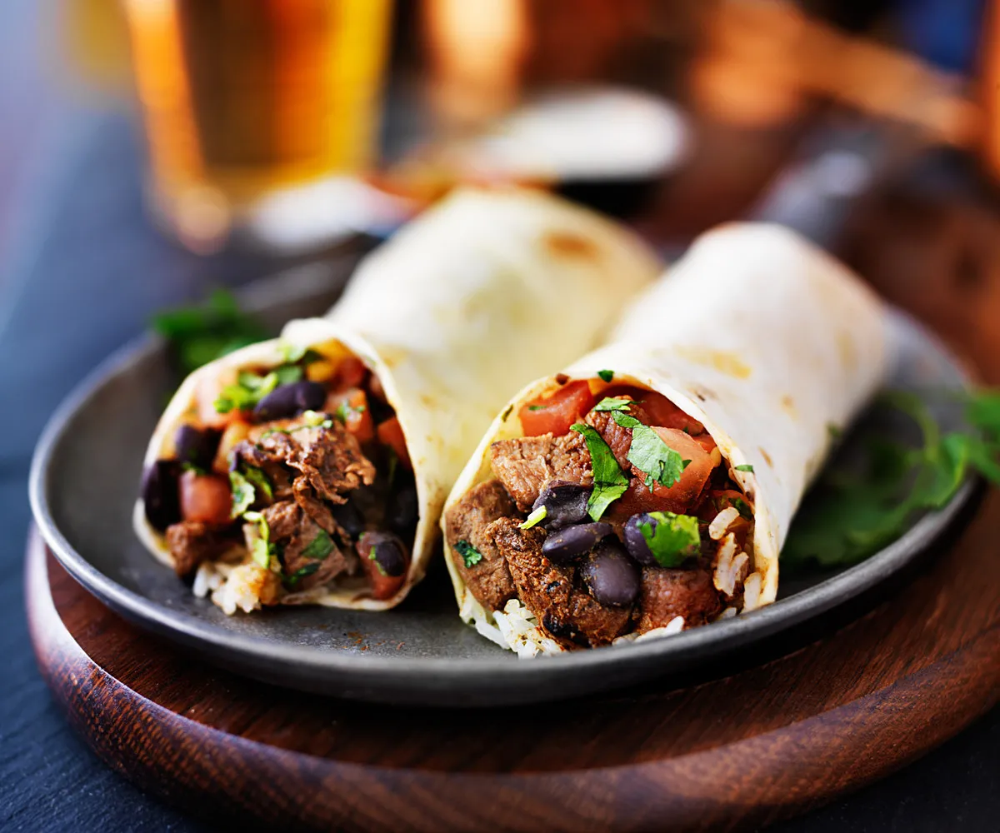

Burritos

Burritos are a Mexican food dish where you have beans and any ingredients of your choice
Ingredients
- Tortilla
- Refried Beans
- Tomato
- Lettuce
- cheese
Steps
- Take the refried beans and put them on an open tortilla
- Put the cheese lettuce and tomatos on the refried beans
- close the tortilla onto the beans as seen in photo